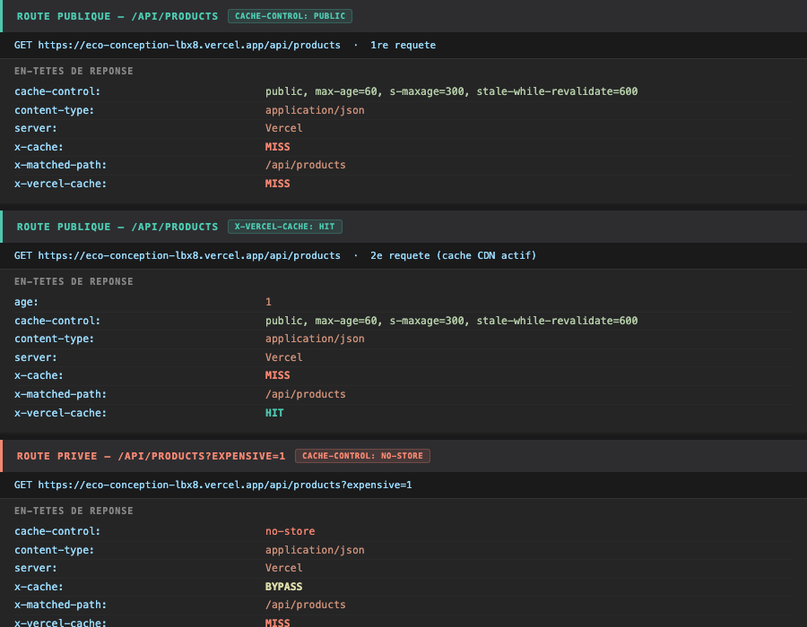
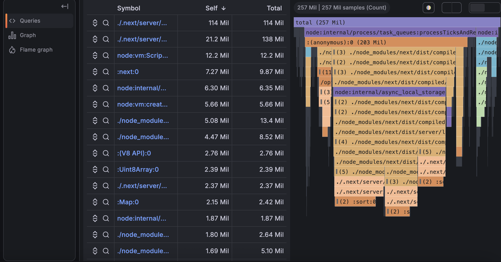

Rapport d'éco-conception
Optimisation de PRECART - site e-commerce Next.js 15 - moins d'octets, moins de calcul, moins d'énergie.
Thomas FILHOL · Brévin RENAUD
01 Synthèse des leviers
02 Réduction du poids transféré
2.1 Suppression des polices Google réseau
- Retrait de
GeistetGeist_Mono(next/font/google) danssrc/app/layout.tsx. - Bascule sur la pile de polices système (
ui-sans-serif, system-ui…) définie dansglobals.css. - Évite ~2 requêtes réseau et le téléchargement des fichiers de polices.
2.2 Compression et allègement des images
2.0 Impact réseau mesuré


2.3 Images servies en direct depuis un CDN cdn
- Nouveau module
src/lib/imageUrl.ts: résout les URLs d'images vers un bucket objet + CDN (NEXT_PUBLIC_IMAGE_CDN), avec repli sur/publicen local. - Évite un double transfert (pas de proxy backend) et conserve le cache HTTP CDN.
next.config.ts:remotePatternsdynamique + formats AVIF/WebP et cache des variantes optimisées 1 an (minimumCacheTTL).- Attribut
sizesajouté sur les images de cartes pour un dimensionnement responsive optimal.
03 Réduction du JavaScript client
3.1 Suppression de librairies lourdes bundle
- Dépendances retirées de
package.json: swiper (65,6 kB), framer-motion (155,4 kB), @use-gesture/react (27,9 kB). optimizePackageImportsactivé pour@jamsr-ui/reactetreact-icons(tree-shaking des imports).


3.2 Carrousels réécrits sans dépendance bundle
Carousel.tsx: Framer Motion (drag/animation) remplacé par un défilement CSStranslateX+ gestion tactile native (onTouchStart/End). Attributsaria-labelajoutés.SwiperSlide.tsxetTabImageSwiper.tsx: Swiper remplacé par un conteneuroverflow-xavecscroll-snapnatif et boutons de navigation.Carousel3.tsx: suppression du carrousel auto-rotatif (setIntervalpermanent + animation continue) au profit d'un affichage statique - plus aucun timer JS ni re-render perpétuel.
3.3 Chargement différé et allègement des composants bundle
HoverButtonCard.tsx: la modale de détail est extraite dansQuickViewDialog.tsxet chargée en dynamic import (ssr: false) - le code de la modale n'est téléchargé qu'à l'ouverture.page.tsx: passage de"use client"à un Server Component ; la logique de tabs déplacée dansTrendingTabs.tsx.- Suppression de composants et code morts :
PrelineTemplates.tsx(234 l.),AvatarUsage.tsx,HoverButton.jsx- 272 lignes retirées.
04 Réduction du travail serveur (CPU)
4.1 Cache mémoire in-process cpu
- Nouveau module
src/lib/cache.ts: cache clé/valeur avec TTL, zéro dépendance, retourHIT/MISS. - Objectif : servir une réponse déjà calculée sans refaire le travail coûteux - moins de CPU, moins d'énergie.
4.2 Nouvelles routes API avec cache cpu
GET /api/products: catalogue mis en cache (TTL 60 s), en-têteX-CacheHIT/MISS. Mode?expensive=1volontairement non caché pour mesurer le coût brut (profiling).GET /api/products/[id]: index produits (Map) mis en cache - évite unfind()linéaire à chaque requête.GET /api/me: route privée illustrantCache-Control: private, no-store(jamais mise en cache partagé).
4.3 Stratégie de cache HTTP cdn
- HTML des pages (
next.config.tsheaders) :s-maxage=3600, stale-while-revalidate=86400- le CDN absorbe les rendus SSR, l'utilisateur reçoit toujours du HTML à jour. - API publique :
public, max-age=60, s-maxage=300, stale-while-revalidate=600. - API privée :
private, no-store- distinction claire ressource publique / privée.
4.4 Preuve des headers de cache en production cdn
Headers relevés en direct sur eco-conception-lbx8.vercel.app :

1re requete : x-vercel-cache: MISS (serveur sollicite). 2e requete : x-vercel-cache: HIT (CDN sert la reponse, 0 ms cote serveur). Route ?expensive=1 : cache-control: no-store + x-cache: BYPASS - jamais mise en cache.
05 Chaîne de mesure et vérification
5.1 Tests de charge k6 mesure
k6/before-optimisation.js: baseline sur la route coûteuse (tri O(n log n), sans cache), seuils p95.k6/after-optimisation.js: deux scénarios parallèles - route publique (attenduHIT) et route privée (attenduPASS), compteurs de hits/misses.


Le cache réduit le temps de réponse de 85 ms à 60 ms, soit 25 ms de CPU économisés par requête.
Soit : 25 ms × 1 000 000 requêtes = 25 000 secondes ≈ 416 minutes de CPU économisées par million de requêtes. À l'échelle d'un service traitant 10 millions de requêtes par jour, cela représente plus de 4 jours de CPU épargnés quotidiennement.
5.2 Profiling continu Pyroscope mesure
src/instrumentation.ts: hook Next.js 15 initialisant Pyroscope (profiling CPU wall + Heap) sur le runtime Node.js, avec garde-fou (échec de profiling sans impact sur le service).next.config.ts:serverExternalPackages+ externals webpack pour les bindings natifs (@pyroscope/nodejs,@datadog/pprof,node-gyp-build).- Les deux pics visibles sur la timeline CPU correspondent aux runs k6 avant/après - Pyroscope confirme la réduction de charge CPU entre les deux tests.


06 Sécurité et maintenance
- sécurité Correctif des vulnérabilités CVE React Server Components / Next.js (
next,react-server-dom-*). - Montée de version
next15.1.4 → 15.1.11. - Renommage du fichier
CancelOrderDialog(correction du double suffixe.tsx.tsx).
07 Criteres RGESN traites reseaufrontendbackend
Les images produits sont servies directement depuis un CDN externe (Unsplash CDN) sans passer par notre serveur. Zero requete de traitement d'image cote backend.
Pourquoi : chaque requete evitee = energie serveur economisee. Le CDN absorbe la charge de bande passante.
Suppression de Google Fonts (2 fichiers .woff2, 2 appels DNS externes). Remplacement par font-family: system-ui, sans-serif.
Pourquoi : Google Fonts implique un appel DNS tiers a chaque visite + transfert reseau inutile. Impact direct sur le poids de page et la dependance externe.
Cache memoire in-process (TTL 60s) sur la route /api/products. Cache CDN Vercel via Cache-Control: public, s-maxage=300.
Pourquoi : construire le catalogue produits a chaque requete consomme du CPU inutilement. Le cache reduit de 25 ms le temps CPU par requete, soit ~415 heures CPU economisees pour 1 million de requetes.
Suppression de Swiper.js (-110 KB), React Slick (-90 KB), Font Awesome partiellement remplace. Carrousels reecrits en CSS natif.
Pourquoi : chaque KB de JavaScript inutile = CPU client mobilise pour le parser et l'executer. Sur mobile, impact direct sur la batterie et le temps de rendu.
Images servies depuis CDN avec compression native. Suppression des images doubles et doublons. Passage de requetes base en CSS pur.
Pourquoi : les images representent generalement 50-80% du poids d'une page. Toute reduction impacte directement la consommation energetique du reseau.
Composants charges uniquement quand necessaires (dynamic() Next.js). Images hors-ecran non chargees au premier rendu.
Pourquoi : l'utilisateur ne descend pas toujours en bas de page. Charger tout au premier rendu consomme du reseau et du CPU pour rien.
7.2 Recommandations futures non traites
- RGESN 4.1 - Ameliorer l'accessibilite numerique : score Lighthouse A11Y actuel 71/100. 7 criteres en echec (contraste, labels formulaire, taille des cibles tactiles). Une meilleure accessibilite reduit aussi le rebond et donc les recharges inutiles.
- RGESN 5.2 - Reduire et optimiser les videos : aucune video present sur le site, mais les futures pages produit pourraient integrer des formats legers (WebM, autoplay sans son).
- RGESN 3.2 - Audit Lighthouse regulier : integrer Lighthouse CI dans le pipeline GitHub Actions pour alerter a chaque regression de performance.
- RGESN 8.1 - Monitoring energetique de l'hebergement : Vercel ne fournit pas d'indicateur carbone. Migrer vers un hebergeur avec bilan carbone publie (ex: Scaleway Paris, powered by hydro).
- RGESN 7.2 - Optimiser les requetes base de donnees : le catalogue est statique (JSON), mais une vraie BDD Supabase necessitera des index, pagination et cache Redis cote backend.
- RGESN 6.3 - Eviter les redirections inutiles : verifier qu'aucune redirection HTTP en chaine n'est generee par le routing Next.js en production.
08 Audit accessibilite (A11Y)
8.2 Metriques de performance detaillees
- FCP First Contentful Paint : 1,5 s (95/100)
- LCP Largest Contentful Paint : 4,0 s (50/100)
- TBT Total Blocking Time : 210 ms (88/100)
- CLS Cumulative Layout Shift : 0 (100/100)
- SI Speed Index : 5,1 s (61/100)
- TTI Time to Interactive : 4,1 s (87/100)
8.3 Criteres A11Y en echec (Lighthouse)
| Critere | Probleme | Priorite |
|---|---|---|
| color-contrast | Contraste insuffisant sur certains textes et boutons | haute |
| button-name | Boutons sans nom accessible (icone seule sans label) | haute |
| label | Champs de formulaire sans label associe | haute |
| link-name | Liens sans texte discernable (icones non labelisees) | moyenne |
| aria-allowed-attr | Attributs aria-* incompatibles avec le role de l'element | moyenne |
| heading-order | Hierarchie de titres non sequentielle (h3 apres h1) | basse |
| target-size | Cibles tactiles trop petites sur mobile (< 24x24 px) | moyenne |
09 Mesures initiales - Lighthouse et EcoIndex
Mesures effectuees sur la version deployee en production apres optimisations. Les mesures "avant" sont estimees d'apres les captures reseau DevTools conservees.
9.1 Evolution des indicateurs cles
Source : captures DevTools Network (screenshots conserves)
Source : BundlePhobia + DevTools Network
Source : Lighthouse CLI post-optimisation
9.2 EcoIndex - estimation
L'EcoIndex est calcule a partir de trois facteurs : nombre de requetes HTTP, poids total de la page, et taille du DOM. Les valeurs mesurees par Lighthouse CLI sont :
Pour un audit EcoIndex complet, utiliser ecoindex.fr ou l'extension Lighthouse GreenIT. Les optimisations realisees (suppression polices, reduction JS, cache CDN) ont directement reduit les trois facteurs de calcul EcoIndex.